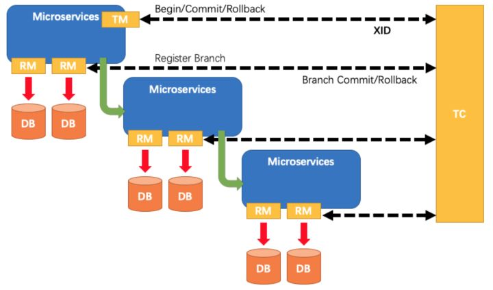
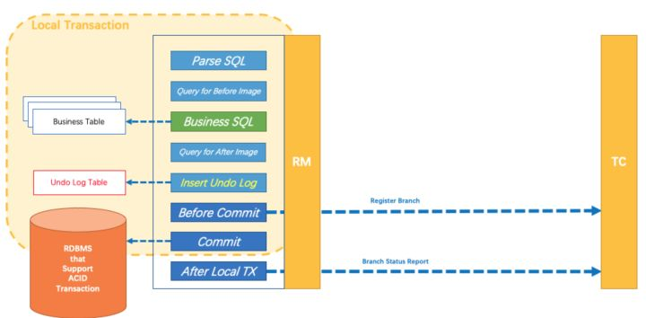
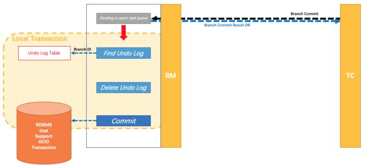
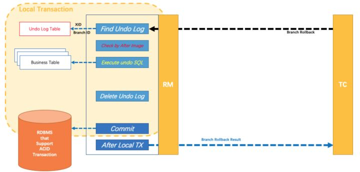
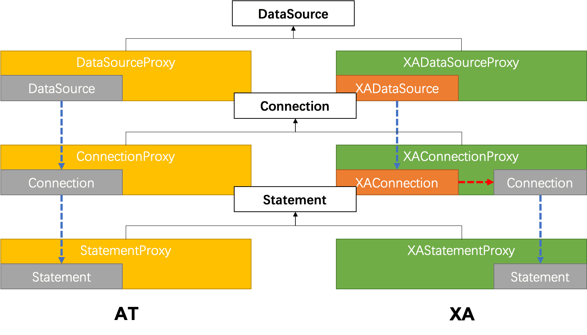

分布式事务，是微服务架构下的一个重要话题，许多场景中，我们都追求业务的一致性，业务的一致性，其实本质上是数据的一致性。
微服务事务
传统的单体架构下，我们借助于数据库本地事务，来解决同一数据库下，不同表数据操作的一致性。微服务架构下，我们将服务拆分成了多个服务实例，将数据库分库分表，这导致我们在一次业务流程中，可能会涉及到多个数据库的数据修改，我们需要借助分布式事务来达到业务一致性这个目的。
XA
两阶段提交，顾名思义整个分布式事务分为两个阶段：
第一阶段：分布式事务发起者，需要分别与分布式事务的参与者协商，是否可以进行分布式事务中的数据修改。分布式事务的参与者首先完成本地资源的锁定，同时记录undo、redo日志，然后根据执行情况，返回对应的信息给分布式事务发起者。
第二阶段：分布式事务发起者收集返回信息，决定分布式事务Commit or Rollback。
2PC要求，在第一阶段，分布式参与者，如果回复yes，那么在第二阶段必须要能Commit。
可以看出XA在执行事务的过程中，需要对使用到的所有资源进行锁定，直到事务执行结束，适合于并发量小的，短分布式事务。
TCC
TCC将分布式事务的一致性交由业务（分布式事务发起者）来处理，通过调用分布式事务参与者提供的Try、Confirm、Cancel三个接口，来实现数据一致性。
Try：完成业务检查，预留数据资源； #这一阶段，可以认为已经在数据库将数据进行了修改并提交，将资源划给了业务。
Confirm：执行业务逻辑，直接使用Try预留的资源；
Cancel：释放Try阶段预留的资源。
TCC属于柔性事务，通过预留资源的方式，不需要对资源加锁。但是对业务的侵入性较大，改造成本高。
SAGA
Saga，使用的是异步补偿机制，业务在提供资源的同时，必须提供幂等的补偿方法，属于柔性事务。适合追求最终一致性的高并发长分布式事务。
Seata解决方案
seata提供了四种分布式事务的解决方案：AT、TCC、SAGA、XA。主要包括三个主要组件：
TM（Transaction Manager）：全局事务管理器，控制全局事务的边界，负责全局事务开启，全局事务提交/回滚。
RM（Resource Manager）：资源管理器，控制分支事务，分支注册，状态汇报，并接受事务协调器的指令，驱动本地事务的提交/回滚。
TC（Transaction Coordinate）：事务协调器，维护全局事务的状态，负责协调并驱动全局事务的提交/回滚。

因为TCC、SAGA本身都对开发代码有侵入性，本次方案暂不考虑，下面主要分析AT、XA两种模式。
AT
AT模式是一种无侵入的分布式事务解决方案。
（1）第一阶段：
通过设置对JDBC数据源的代理，用户定义的SQL，全部在这层代理中执行，在这层代理中，seata可以控制sql的回滚提交，并且可以利用本地数据库ACID特性，将业务sql和数据镜像（beforeImage和afterImage）组成回滚日志，统一提交和回滚，保证了任何业务的更新，一定会有对应的本地回滚日志。（RM）
在本地事务提交之前，RM会向TC注册本地分支，同时以数据的resourceId-tableName-rowPK作为锁的key申请数据的写锁。如果拿不到写锁，RM以重试+超时重复该过程。
完成本地事务后，RM会向TC汇报本地事务的执行情况（RM不向TM汇报执行情况，是因为存在TM可以在某个RM执行失败的情况下，强制发起提交）。并完成业务的RPC调用过程。

（2）第二阶段：
如果是全局提交，分支事务已经完成提交，立即释放全局事务申请的所有写锁，异步调用RM清理本地数据库的回滚日志。

如果是全局回滚，RM收到全局协调器发来的回滚请求，通过XID和BranchID找到对应的回滚日志，生成反向更新的sql，完成对数据的回滚，然后通知TC回滚完成。这时候TC才释放该分支事务相关的锁。

回滚失败的情况：如果分布式事务和本地事务同时对外开发接口，那么在分布式事务回滚之前，本地事务的接口，如果不验证在TC注册的锁，那么分布式事务回滚时就可能遇到数据不一致，无法通过回滚日志恢复，会抛出异常。
经测试发现：分布式事务未提交之前，已提交的本地事务的分支，如果此时分支系统提供了本地修改接口，如果通过本地修改接口修改了数据，会导致分布式事务回滚失败。需要在Service上追加@GlobalLock的注解，这样在本地修改接口修改数据时，会去探测分布式事务的锁，如果存在，本地修改抛出异常，修改失败。
参考链接
XA
XA模式利用事务资源（数据库）对XA协议的支持，以XA协议的机制来管理分支事务的一种事务模式。从编程模型上，XA模式和AT模式保持完全一致。

使用XA模式仅需要替换对应的dataSourceProxy，XA不需要undo_log的回滚日志记录表。
1 |
|
AT vs XA
本文使用seata-sample中的demo进行测试，传送门，对比AT、XA两种模式在实际开发中的使用情况，建议采用AT模式。原因如下：
（1）XA模式，通过数据库本地XA协议实现，对性能影响严重，同时，目前的版本，会影响到本地接口方法的执行，报 failed to register xa branch null since GlobalTransactionNotExist:Response[ TransactionException[Could not found global transaction xid = null, may be has finished.] 的异常。
（2）AT模式，通过Seata-Server一端的数据存储，实现数据的行锁，不会有严重的性能损失，同时，如果应用需要同时提供本地接口方法和分布式接口方法，可以通过@GlobalLock，去侦测Seata-Server的行锁，达到数据修改统一互斥的目的。